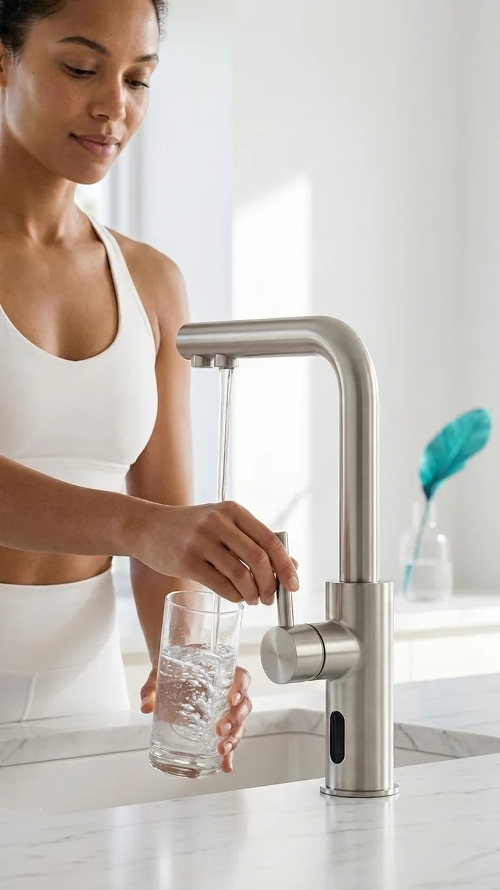
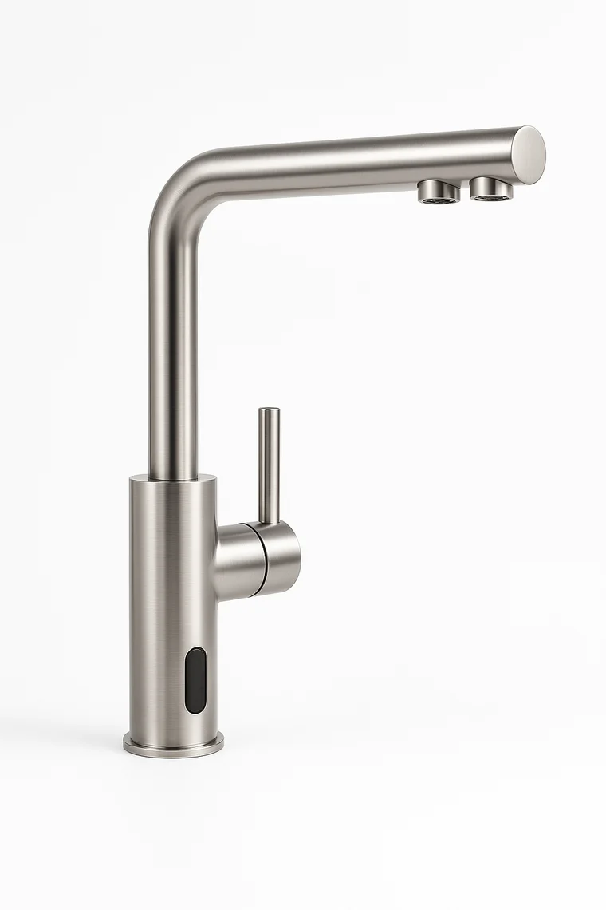
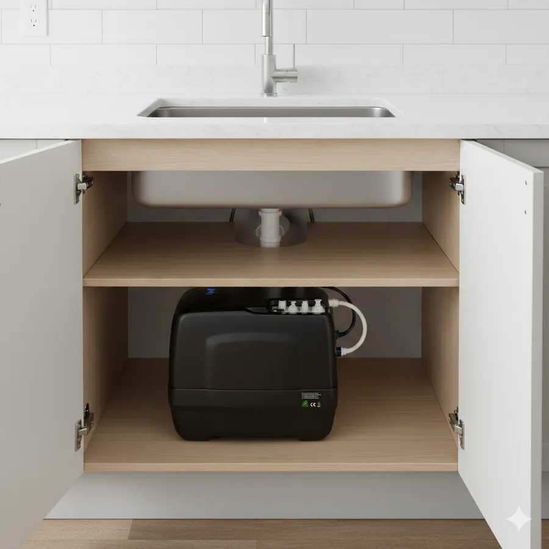
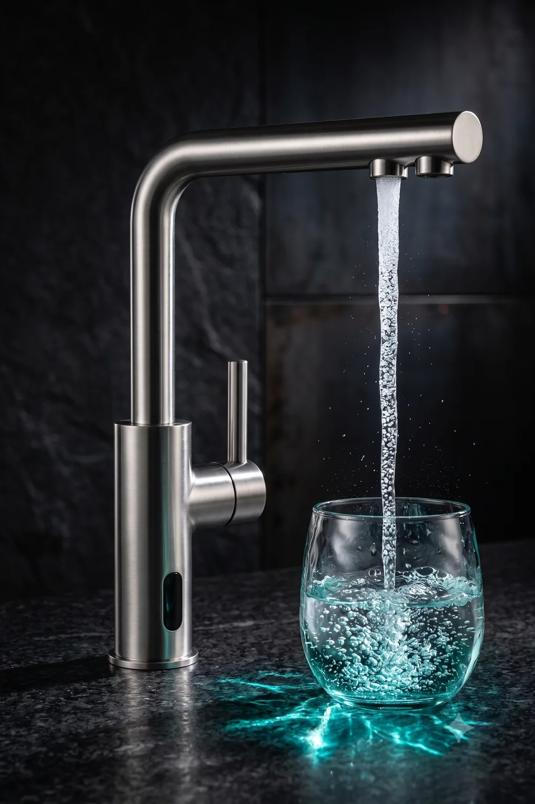
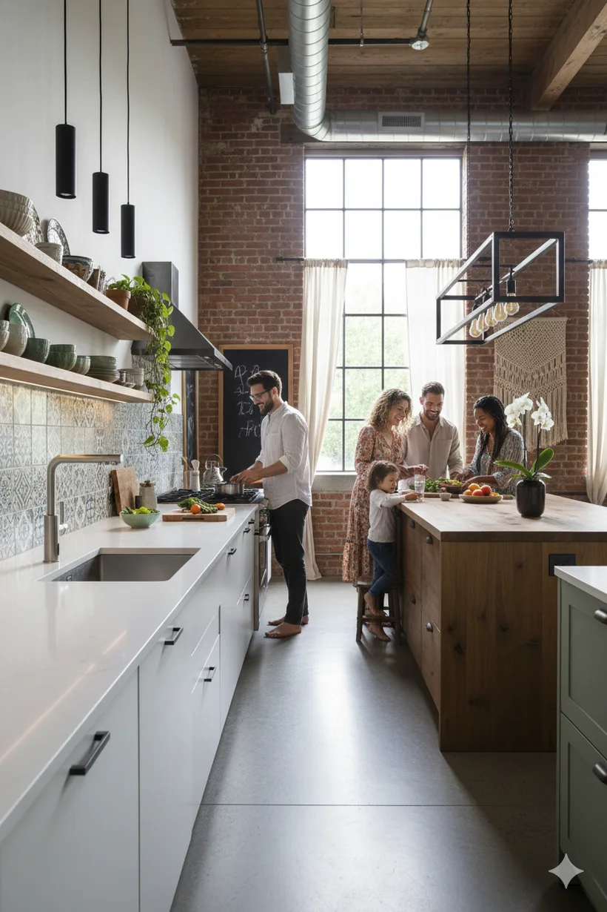
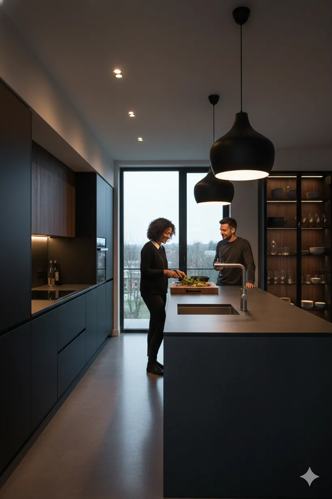

De wellness-utility voor thuis
Zuiver. Vitaal. Onbeperkt.
6-staps omgekeerde osmose met UV-sterilisatie en moleculaire H₂. Houdt PFAS, microplastics en bacteriën tot 99,9% tegen en verwijdert tot 95% van de opgeloste stoffen (TDS). Daarna geremineraliseerd en verrijkt met waterstof. Vanaf €39 per maand, onderhoud en filters inbegrepen.
Vanaf €39 / mnd excl. btw · onderhoud & filters inbegrepen · specificaties volgens fabrikant

01 · De aanpak
Zes stappen.
Eén glas perfectie.
Moleculaire omgekeerde osmose verwijdert vrijwel alles wat niet in je glas thuishoort, en bouwt daarna bewust weer op wat wél bijdraagt. Ontdek elke stap.
Zand, roestdeeltjes en zwevend vuil worden als eerste afgevangen, zodat de fijnere filters optimaal blijven presteren.


Onder de gootsteen02 · Werking
Slimme techniek.
Strakke kraan.
Alle techniek verdwijnt in je onderkast. Boven blijft alleen een strakke designkraan die twee soorten water levert: gewoon en gezuiverd-vitaal.
Onzichtbaar onder de gootsteen
Het complete 6-staps systeem zit compact weggewerkt in je onderkast. Geen werkbladtoestellen, geen flessen. Alleen je kraan.
Eén kraan, twee stromen
Een aparte uitloop levert gezuiverd én vitaal water, naast je gewone leidingwater. Kies bewust wat er in je glas komt.
Sensorbediening, touchless
Een geïntegreerde sensor activeert de stroom. Zo bedien je de kraan hygiënisch met de rug van je hand, ook met volle handen.
Past op je bestaande kraan
De kraan past in de bestaande kraanopening (21 mm) met standaard 3/8"-aansluiting. Een erkende installateur plaatst alles in ongeveer 30 minuten.

Microbubbels · moleculaire H₂03 · Wetenschap
Niet zomaar zuiver. Vitaal.
Zuiveren is stap één. Het verschil zit in wat we daarna toevoegen: mineralen die je lichaam herkent en moleculaire waterstof die als antioxidant werkt. Meetbaar in elke druppel.
PFAS & microplastics eruit
Het RO-membraan houdt 'forever chemicals', microplastics, lood en nitraten tot 99,9% tegen; bacteriën en virussen worden nagenoeg volledig gestopt. De TDS-reductie (totaal opgeloste stoffen) bedraagt gemiddeld 95%.
Moleculaire waterstof erin
De SPE-cel (Solid Polymer Electrolysis) genereert opgeloste H₂, een kleine en selectieve antioxidant die neutrale watermoleculen en mineralen ongemoeid laat.
UV-sterilisatie: 100% zuiver
Een ingebouwde UV-C-lamp doodt in de laatste stap alle resterende bacteriën en virussen. Zonder chemicaliën, zonder bijsmaak.
Wat je lichaam terugvraagt: schoon water, herkenbare mineralen en een antioxidante lading. VitaTap houdt PFAS, microplastics en bacteriën tot 99,9% tegen, reduceert de opgeloste stoffen met 95% en steriliseert daarna met UV-C. Vers en vitaal aan de uitloop.
Bekijk de kraanVerwijdering tot 99,9% verwijst naar specifieke verontreinigingen (PFAS, microplastics, lood, bacteriën en virussen) volgens fabrikantsmetingen van het RO-membraan. De 95%-reductie van totaal opgeloste stoffen (TDS) is een gemiddelde fabrikantsmeting van datzelfde membraan. UV-sterilisatie elimineert bacteriën en virussen in het opslagtank-stadium. H₂-concentratie (1,2–1,6 ppm) en ORP-waarden (−400/−600 mV) zijn fabrikantspecificaties gemeten aan de uitloop. Verwijzingen naar antioxidante eigenschappen beschrijven algemene kenmerken van moleculaire waterstof, geen medische of gezondheidsclaims.
Getest & gemeten
Zwart op wit.
Geen loze beloftes. Dit zijn de keuringen en gemeten waarden waarmee VitaTap is gebouwd.
04 · Wellness-dashboard
Je water,
in cijfers.
Met de Blue Companion-app zie je precies wat er uit je kraan komt. Volg de kwaliteit van elk glas, kalibreer je ORP-waarden en plan onderhoud, allemaal vanaf je telefoon.
Draadloze app-verbinding
Koppel de Blue Companion-app en lees TDS, H₂-concentratie en ORP (−400/−600 mV) rechtstreeks van je kraan af.
Live waterkwaliteit
Realtime metingen tonen exact hoe zuiver en hoe waterstofrijk je water op dit moment is.
Filter-levenscyclus
Een digitale ID houdt je 12-maandelijkse filterbeurt bij en seint op tijd je installateur in.
05 · De kraan
Vier finishes.
Eén statement.
Dezelfde strakke designkraan met sensorbediening, afgewerkt in de toon van jouw keuken. Kies je finish en zie het direct.

Elke dag

In elke keuken
Gratis & vrijblijvend
Advies zonder aankoopverplichting.
30 dagen proefperiode
Niet overtuigd? Wij demonteren gratis.
Alles inbegrepen
Onderhoud & filters in je abonnement.
Maandelijks opzegbaar
Met het maandplan, geen verrassingen.
06 · Prijzen
Alles inbegrepen.
Altijd zuiver, altijd vitaal.
Onderhoud, filtervervanging en support zitten er standaard in. Kies de looptijd die bij je past. Hoe langer, hoe voordeliger.
- Maandelijks opzegbaar
- VitaTap-designkraan in jouw finish
- 6-staps zuiveringssysteem onder de gootsteen
- Jaarlijks onderhoud inbegrepen
- 12-maandelijkse filtervervanging inbegrepen
- Blue Companion-app & support
- −31% t.o.v. maandelijks
- VitaTap-designkraan in jouw finish
- 6-staps zuiveringssysteem onder de gootsteen
- Jaarlijks onderhoud inbegrepen
- 12-maandelijkse filtervervanging inbegrepen
- Blue Companion-app & support
- −40% · prijsgarantie 5 jaar
- VitaTap-designkraan in jouw finish
- 6-staps zuiveringssysteem onder de gootsteen
- Jaarlijks onderhoud inbegrepen
- 12-maandelijkse filtervervanging inbegrepen
- Blue Companion-app & support
We rekenen met 4 liter per persoon per dag: ±2 liter drinkwater plus water voor koffie, thee en koken.
†VitaTap 5-jarenplan · €39/mnd excl. 21% btw (€47,19 incl. btw) · vaste kost ongeacht verbruik · excl. eenmalige opstartkost €605 incl. btw.
Flessenwater: winkelprijs Delhaize.be juni 2026 (6×1,5 l), incl. 6% btw. Plastic: 1 fles = 50 cl. Prijzen kunnen variëren.
Liever eerst advies? Plan een gratis en vrijblijvend adviesgesprek →
07 · Installatie in jouw regio
Installatie bij jou thuis
Geef je postcode in en we bevestigen de plaatsing in jouw regio. Een erkende vakman, uit ons eigen team of een gecertificeerde partner, plaatst alles volgens het 30-minuten protocol en kalibreert via de Blue Companion-app.
Actief in heel België · plaatsing in ongeveer 30 minuten.
Ben je zelf installateur? Word erkende VitaTap-partner →
08 · Installatie & service
In 30 minuten
geïnstalleerd.
Onze erkende installateurs volgen een strak protocol, van voorbereiding tot kalibratie, zodat je dezelfde dag nog vitaal water tapt.
De bestaande kraanopening (21 mm) en de 3/8"-aansluiting vrijmaken. Geen extra boorwerk nodig.
21 mm · 3/8"Systeem in de onderkast, kraan monteren en leidingen koppelen, in zo'n 30 minuten.
± 30 minMet de Blue Companion-app de ORP-waarden bevestigen tussen −400 en −600 mV.
−400 / −600 mVDigitale ID aanmaken voor tracking van de verplichte 12-maandelijkse filterbeurt.
12 mnd cyclus09 · FAQ
Veelgestelde vragen
Klaar voor de overstap?
Zuiver water. Elke dag.
Vraag vandaag je gratis en vrijblijvend adviesgesprek aan. Een erkende installateur bekijkt je situatie en plaatst alles nadien in zo'n 30 minuten.
10 · Gratis advies
Eerst advies,
dan beslissen.
Laat je gegevens achter en we contacteren je binnen 2 werkdagen voor een gratis en vrijblijvend adviesgesprek, op een moment dat jou past.
- Een erkende installateur uit jouw regio bekijkt je keuken en aansluiting
- Op afspraak: bij jou thuis of telefonisch, zoals je zelf wil
- Volledig vrijblijvend. Geen aankoopverplichting, geen opdringerige opvolging